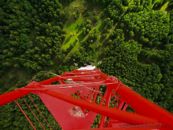

Корпус НИИЭПИТА
НИИЭПиТ - Научно - Исследовательский Институт Экспериментальной Патологии и Терапии, расположенный в
городе Сухум. Базой НИИ является НИИЭПиТ
- Научно - Исследовательский Институт Экспериментальной Патологии и Терапии, расположенный в городе
Сухум. Базой НИИ является Сухумский обезьяний
питомник, основанный в 1920х годах первым в Советском Союзе. В августе 1927 года в Сухум были доставлены
первые обезьяны – шимпанзе, павианы и макаки.
Задача акклиматизации обезьян и их размножения в условиях неволи была очень сложной. Животные погибали
от дизентерии, пневмонии, туберкулеза,
глистных поражений. Усилиями многих выдающихся ученых она была успешно решена. Питомник состоял из
нескольких корпусов с вольерами и службами,
а также вольеров, установленных по всей площади горы "Трапеция". Сухумский обезьяний питомник - без
преувеличения
уникальный объект, так как условия, необходимые для содержания большого количества обезьян, соблюдаются
мало где в бывшем СССР и нынешней России.
